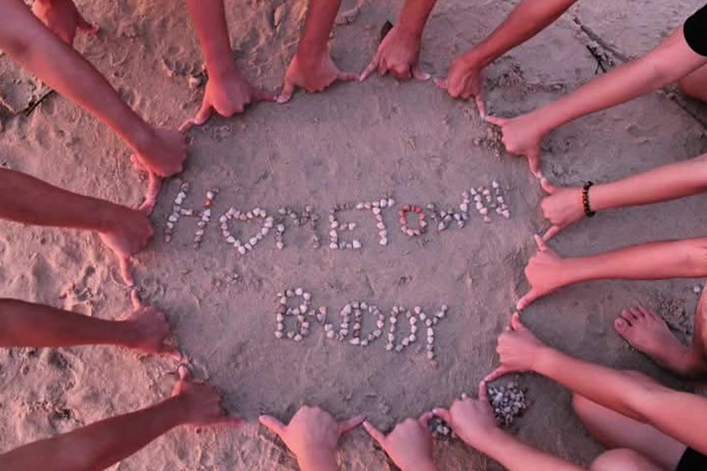
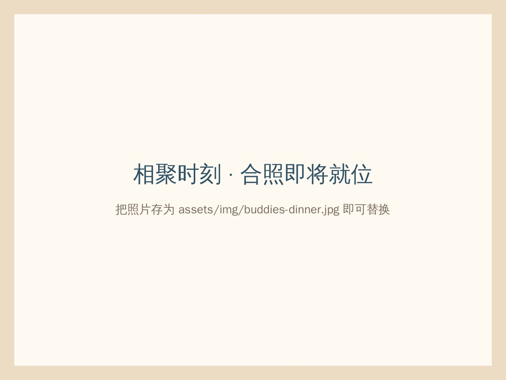

赤脚跑过的沙滩：巴冬渔村的童年
海风吹过咸咸的温度，你讲"走去玩咯"，我讲"steady"。 骑着脚车从白天到日落，偷偷去抓鱼被阿母骂够够——以前什么都没有，快乐却特别多。
小时候赤脚跑过沙滩，骑着脚车白天到日落；长大后有人去了 KL，有人当了老板， 有人孩子都会飞跑了——但 WhatsApp 一响，还是那句："Bro，今晚去哪里？" 这里记录我们这班兄弟的故事。
看看老故事 读主题曲歌词
虽然大家越来越忙，但每次聚在一起，还是像从前。

日子慢慢把我们带走，但故事要留下来。
海风吹过咸咸的温度，你讲"走去玩咯"，我讲"steady"。 骑着脚车从白天到日落，偷偷去抓鱼被阿母骂够够——以前什么都没有，快乐却特别多。
虽然现在大家忙，见面越来越少，但群里一句"走咯"， 打几玩 game 吹水到半夜，去 kopitiam Lim Teh 又是一整夜——感情还是不会变。
有人已经发财很多，有人结婚了，有人孩子都会飞跑了。 但每次聚在一起还是像从前——等到大家头发变白，回到巴冬再相聚。